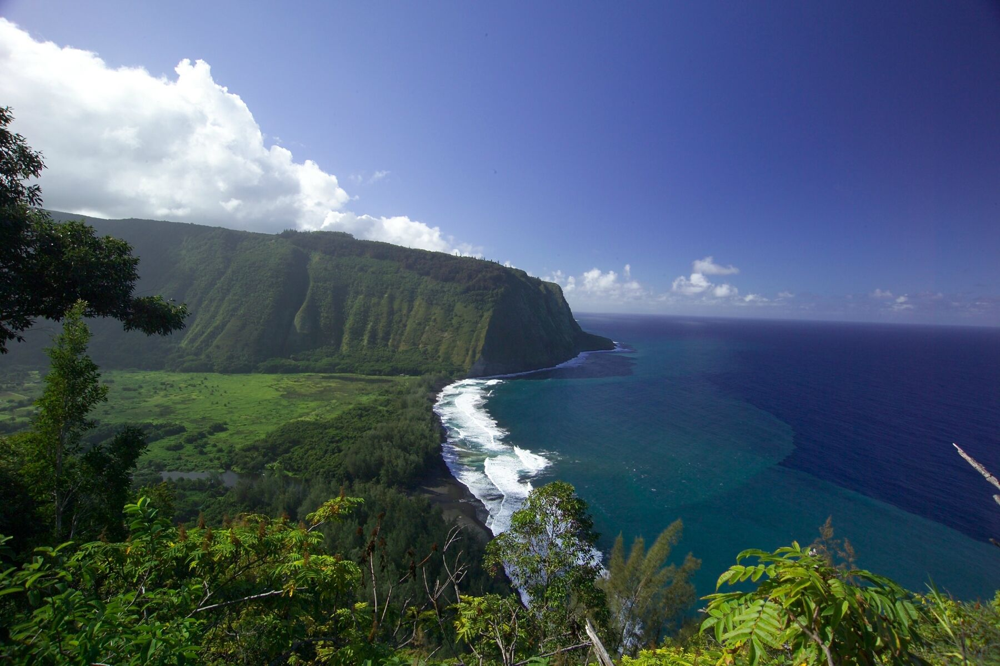
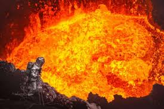

You should go to...
the Hawaiian Islands!
Honolulu is a great tourist destination, but it's pretty easy to get to. Try another island for a different experience, or just drive around to the northern side of Oahu.
You should go
rappelling into a volcano!!
It's not something everyone can do. In fact, it's likely only George Kourounis and Sam Cossman have! Rappell down into the crater wearing a heat resistant suit and stand next to the boiling lava for as long as you can!
You should go to...

Ilha da Queimada Grande(aka "Snake Island")!
Ilha da Queimada Grande is an island off the coast of Brazil. Visits are strictly controlled by the Brazillian government, as the island has an incredibly high concentraion of venemous snakes! The island itself is even shaped like a snake!
Some experts claim that there is one snake for every square meter in some spots, and a single bite can cause kidney failure, necrosis, brain hemorrhaging, and intestinal bleeding.
It's not fun, but it sure is hot and dangerous! You can learn more about the island on Wikipedia.
You should go...
climb Annapurna!
It may not be the tallest mountain in the world, but it's currently the most dangerous, with only a 62% survival rate! Only 157 people have summitted it and 60 people have died! You can learn more at Wikipedia.
You should go ...

ski to the South Pole!
It's an incredibly strenuous journey across the world's largest desert. It's cold and you probably won't die, but you might lose a toe! Do find someone to water your plants however, because you'll be gone for at least two months! Figure out who to talk to at Adventure Consultants!
You should stay at...

an ice hotel!
There are many to choose from. You can head north to Alaska or Quebec, or you can cross the ocean and stay in one in Japan, Finland, Norway, Romania, or Sweden! Just make sure you call ahead so your room isn't melting or in the process of being rebuilt! More information can be found here.